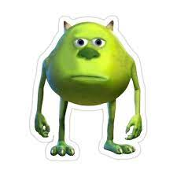
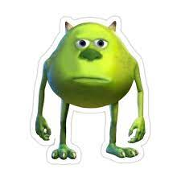
8/19/2022
Today I learned to make a very simple website with basic features.
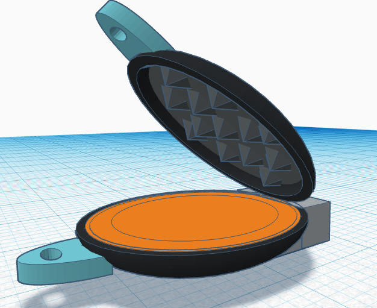 PDF of the Challenge
PDF of the Challenge
9/2/2022
This week I learned about the different types of engineering. The one that sticked out to me was chemical engineering, because I it involves microscopic engineering which is fascinating. At the end of the week we started planning the Rube Goldberg Simple Machine. I also tried to realisticly model a wafflemaker in Tinkercad on Thursday.
9/16/2022
This week we mostly worked on our Rube Golberg design. Our team worked with cardboard, cutting out the shapes to make the objects which are used in the design itself. On Thursday we made a paper boat and put 8 quarters in it. Unfortunately, it did not do great on water.
9/23/2022
This was the week of actually bulding the Rube Goldberg design. We used our individual designs to make a design for the group whcih included elements from the every individual design. The process of building was tough and the time was scarce. On the final day we did not have a working Rube Goldberg design untl the last minute of the class. However, even now it took multiple tries to acutally pop the balloon. It took so many tries that the TA did not even record the successful trial, as he already got exhausted from recording all the previous failures.
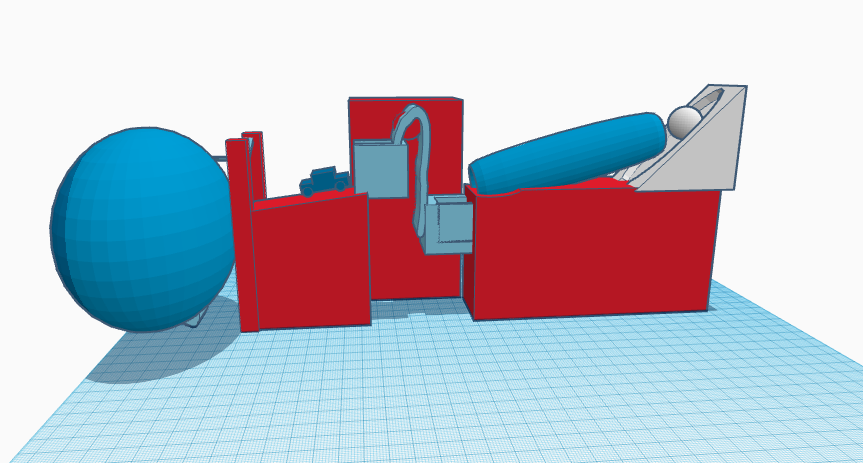 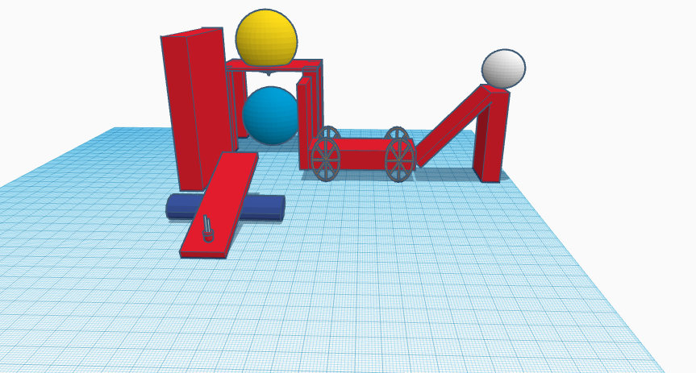9/30/2022
This we we did not much, because Mr. Poole was absent due to his Covid. We made a tinkercad for a limb prosthetic for an animal. I chose a fish and made a prosthetic for its tail.
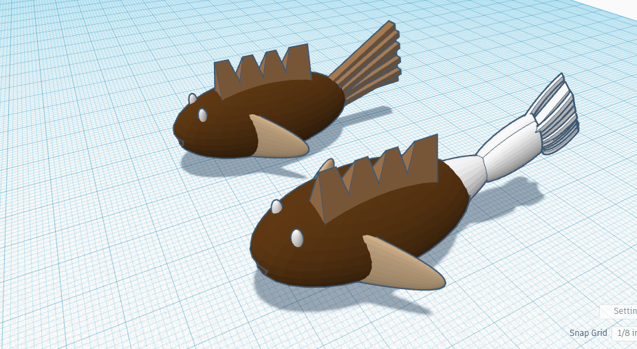10/14/2022
We started a new project this week. We are going to build a rocket out of a bottle. We have already designed the overall image of it on TinkerCad. It looks pretty simple but we hope it will work.
10/24/2022
We finished our Bottle Rocket project. So far, it was the easiest one. Below are the pictures and the analysis form.
PDF of the Challenge 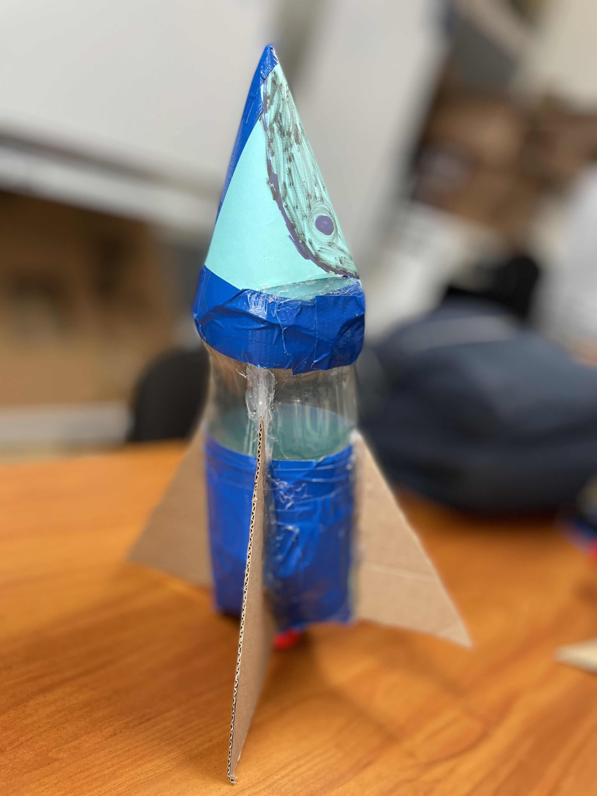 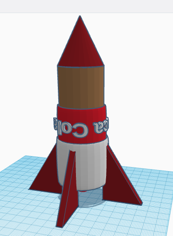11/1/2022
This week we learned about bioengineering. This type of engineering uses technology to alter the enviorment making beneficial changes both to humans and nature. We used sand, rocks, and cotton to clean a very dirty water. My improvised filter did not do a very good job.
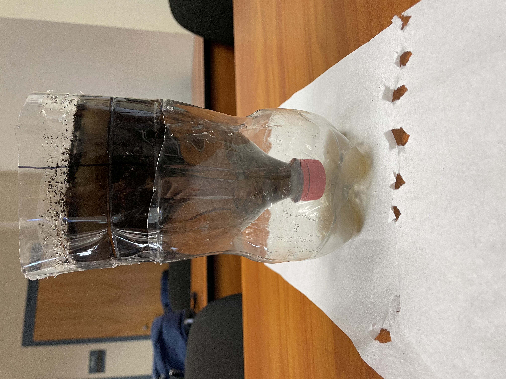11/4/2022
This week we began learning about circuits. We learned the Ohm's law which states that the current through a conductor between two points is directly proportional to the voltage across the two points. The formula is V=IR, where V is the voltage, I is the current, and R is the resistence. We designed a couple of cicuits on TinkerCad using LEDs.
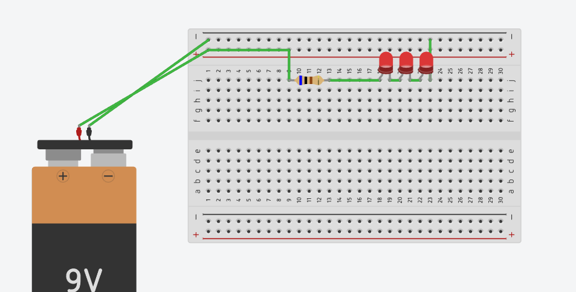 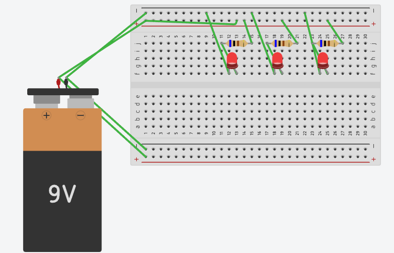11/10/2022
We started working on actual circuts and completed a couple of designs. We mainly used LEDs and resistors to create both direct and parallel structures. Also, we had an interesting debating challenge that required to argue which is better: to write down every number between 1 and 1,000,000 or take a math class. Me and my partner chose to advocate for the superiority of math.
PDF of the Challenge 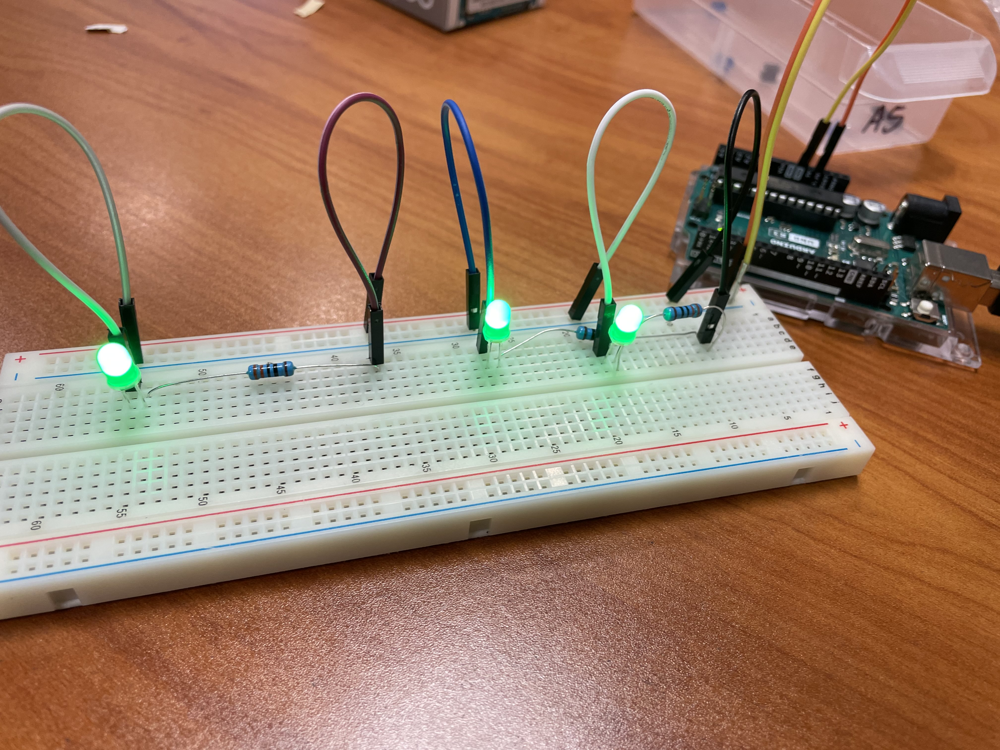 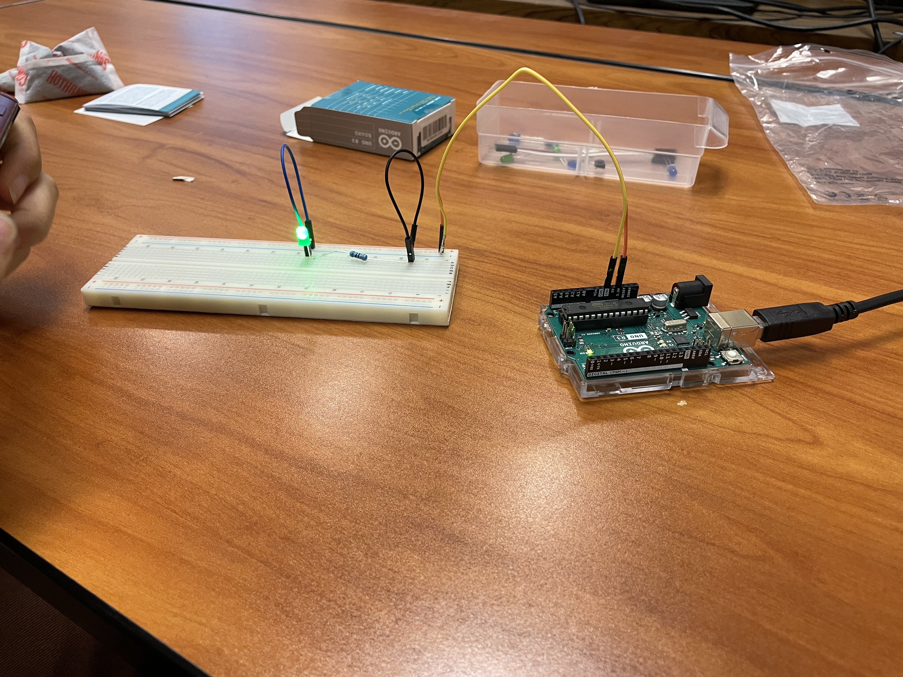11/18/2022
This week was intense. We got into programming a circuit, which was very interesting. We made the the LEDs light up with certain patterns as well as fade in and out. The challenge for this week tied back to Environmental Engineering couple of weeks ago. The objective was compelling, see the PDF attached. Over the thanksgiving break I intend to get really good sleep and work on my physics skills. I desperately need to extend my knowledge in physics. Other than that I will just be chilling with my family and freinds.
PDF of the Challenge 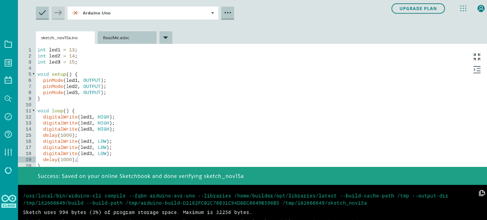12/2/2022
We started our final project this week. It is an interesting and difficult assignment which is connected to Civil Engineering, bulding a spaghetti bridge. And it is even more complicated because of the condition that limits the allowed amount of spaghetti to only 20. During the first week, my group managed to make a design and build it, however it collapsed so quickly that we did not even have time to take some pictures. Below is the cad of our new design which we are hoping to build today.
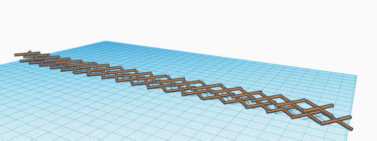12/9/2022
We dedicated this week to building the second design. We worked hard as the X's required pretty meticiulousness. We finally finished it at the end of the week. We are planning to test it next week.
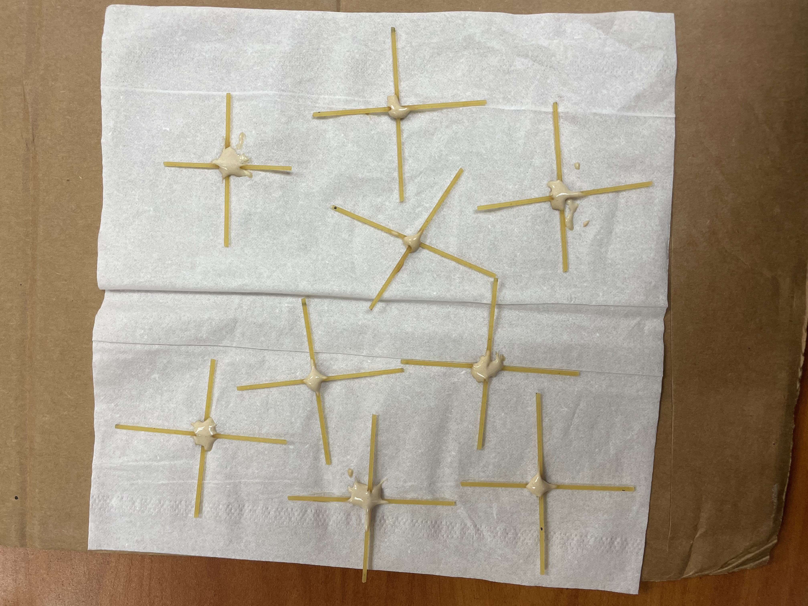 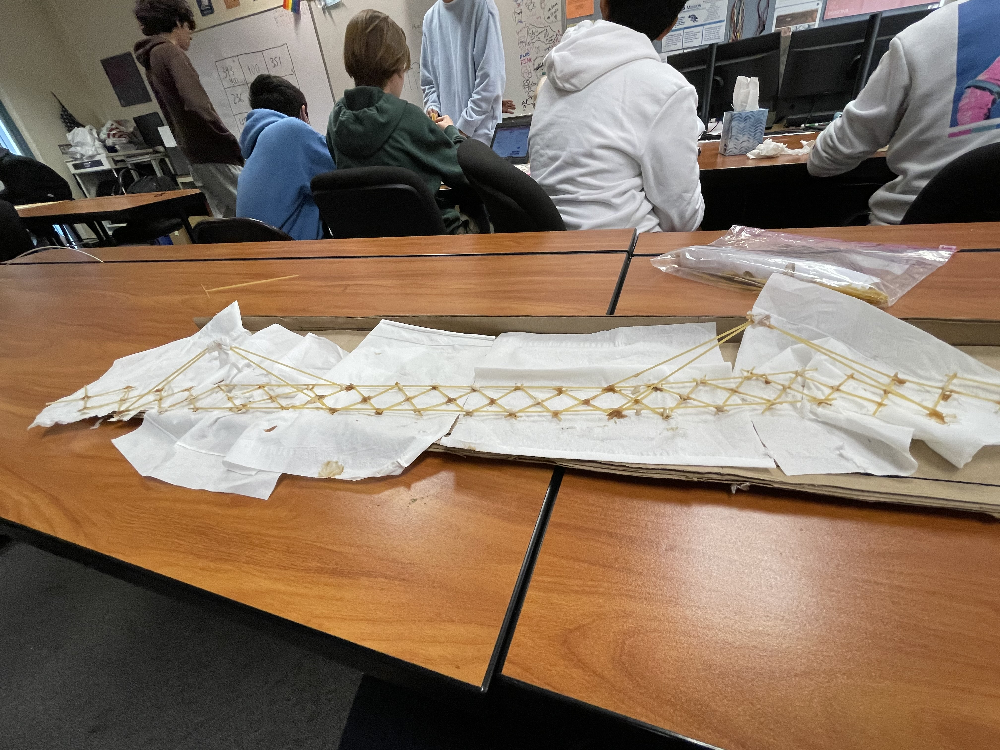12/16/2022
Our wonderful design broke without showing any fight. We saved the body of it, removed the arches and added reinforcement on the sides. The full chronology can be found on our presentation below.
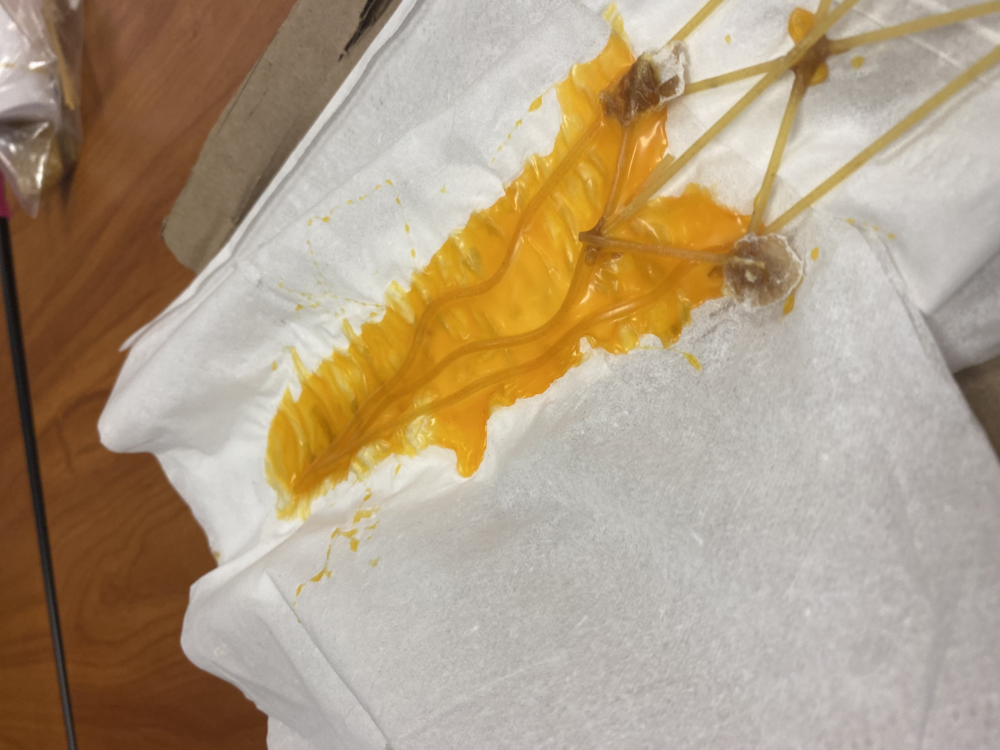 Final - Presentation1/13/2023
Happy New Year! We immidately started a new project. This time it is mainly about business and the ability to sell. We were asked to come up with a product and make a presentation about it as well as our company to gain the support of investors. We made a presentation but it is not finished yet.
The Presentation1/20/2023
I missed three of the five classes this week. All because I strained my neck on Tuesday and locked my head in a firm postion unable to move it. What I missed was some business presentations. The good thing about this was that I got some rest. I am excited to return to class next week!
1/27/2023
This week combined both a fun activity and hard work. In the beginnign of the week we learned about chemical engineering, thus completing a lecture about the last type of engineering in our course. Then we went out and made a non-newtonian fluid. I played a lot with non-newtonian fluid when I was 7-9, so it was nice to revisit this "toy". And finally, we started our big projects. From all the options, I chose to make an arduino car. So far, I have no doubt that this is going to be the most interesitng project we have done.
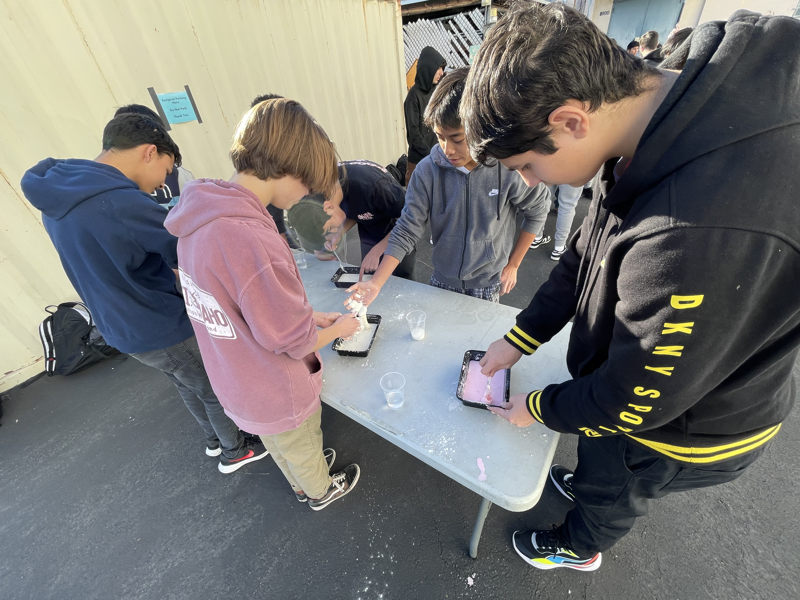2/3/2023
We started making the cads for our project. The first two days we spent on this, after which we missed a class due to the evacuation. Then I teamed up with Chris to participate in an intersting challenge on a Challenge Day. The objective was to make the longest bridge using 15 sticky notes. Chris and I cut the notes into quarters and connected them. After that, we cut this bridge in half and connected the two pieces making an even longer bridge. We evenutlaly won the first place. P.s. It is not our bridge in the image below.
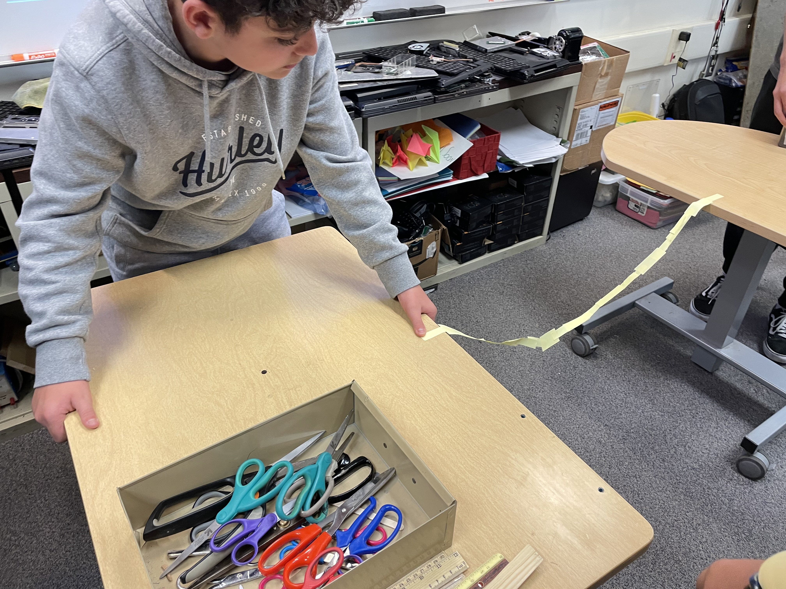2/10/2023
This week I began building my Arduino Car. I used the first couple of days to cut out the cardboard base. Then I got the electrical elements of the car and started attempting to program. So far programming seems a little confusing but doable. The images below is what I have so far.
 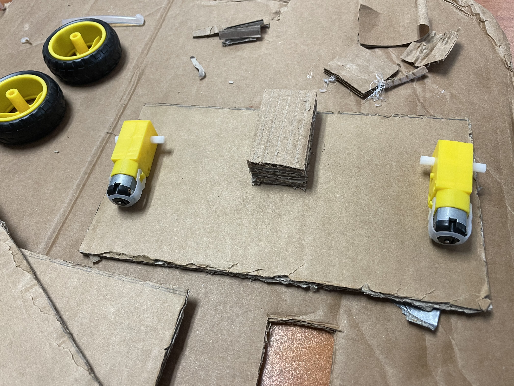
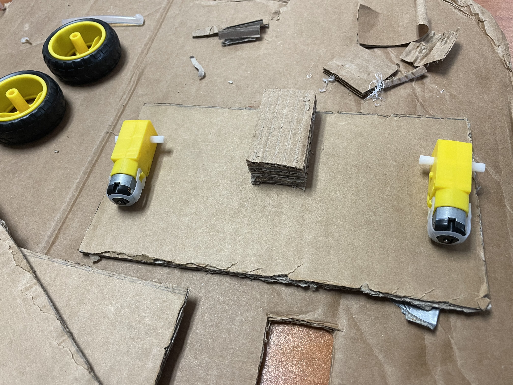
2/17/2023
This week began with reorganizing and redisigning the project. The fact that I had cadded my design using 4 wheels and a motor driver shield, but I was provided with 2 wheels and no motor shield made me reconsider my card boare base. I cut out a new base that would fit the components including the breadboard which will now substitute the motor driver shield. I added a little elevated platform for the ultrasonic sensor on the board. Then I continiued programming and managed to get the motor to work. I also designed a third wheel out of cardboard and a stick. Next week, I plan to combine the parts and connect the sensor to the system.
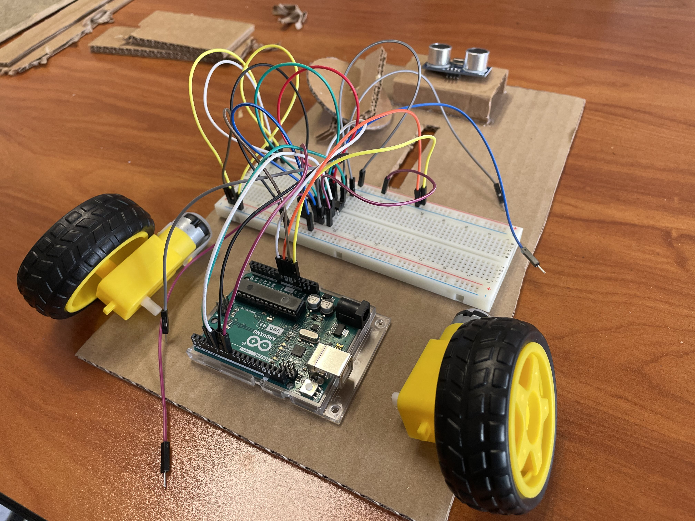2/24/2023
This week was the most interesting and intense week I have had in this class. Everyday, after the class ened I couldn't wait to coming to school the next day and continue working on my project. I finished the wiring of my car as well as secured the components inside the body. The code is working as the sensor seems to detect obstacles and send a signal to the motors to change the direction of the car.
Next week I will attach the wheels and complete the first real test. After that, I will add a roof to the car. Also, if there is time left I will try to color the car and maybe add something more to make it look better. Fell excited about next week!
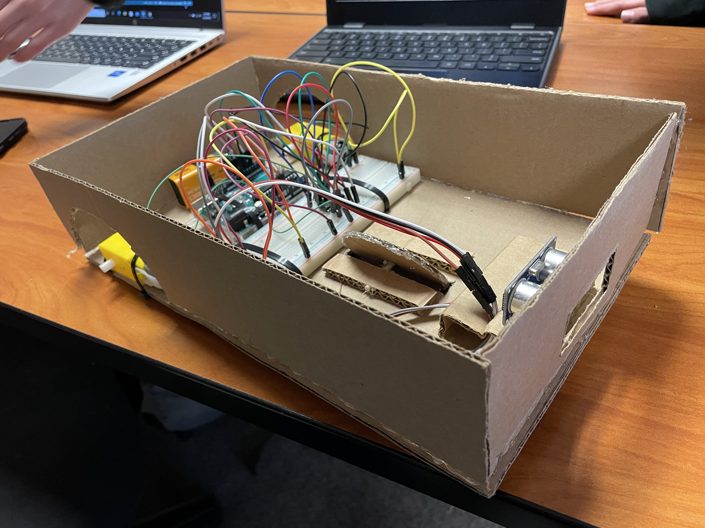3/3/2023
This week we finished the project we have been working on for several weeks. As I planned last week, I attached the wheels and added a roof to the car so the wires do not harm the appearance of the car. I also borrowed the face of Walter to add some identity to my arduino car. Also after conducting a test on the first day, I realized that it was not turning as well as I would like it to. For this reason I brought 4 bottle caps and improvised two additional frontal wheels. Now, it was fully ready to go.
On the D-Day my car performed very well. It kept a decent speed and avoided the obstacles it faced on its way. Thankfully, no force majeures took place.
This project, hands down, my favourte one to work on. This is due to the combination of the fascinating objective and the opportunity to work solo. I learned to interact with Arduino uno and write some simple codes for it. However, the most valuable takeaway from this project is the skill to cope with problems and unplanned situatuions. I had to redesign the body of the car a couple of times because I received different components than I anticipated. Overall, the last weeks have been very exciting and engaging.
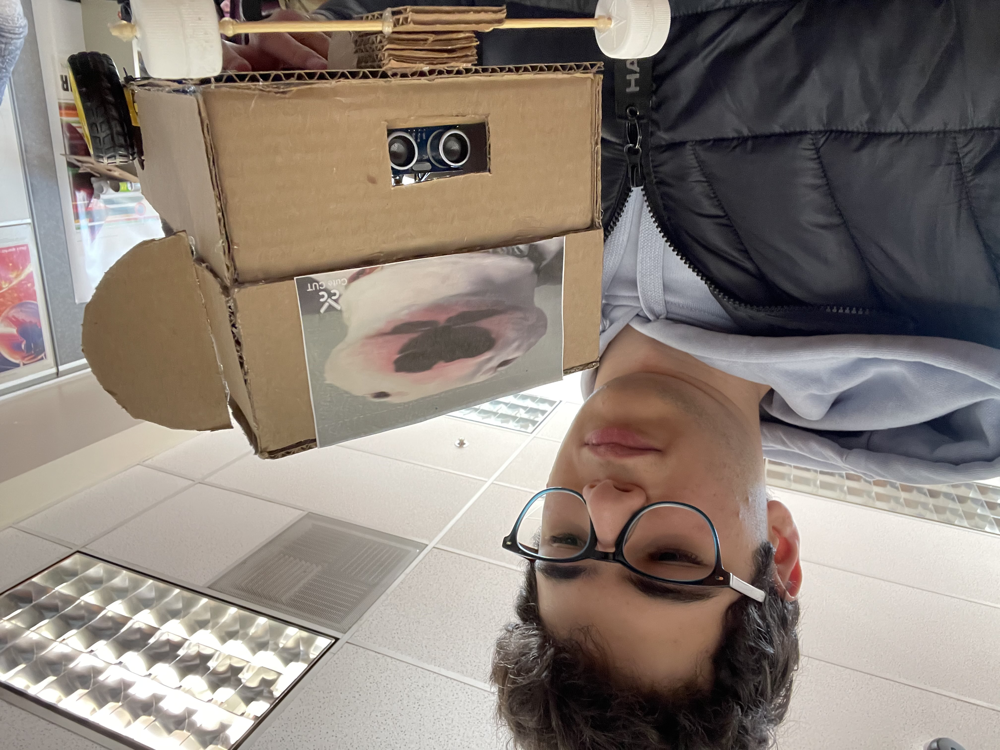 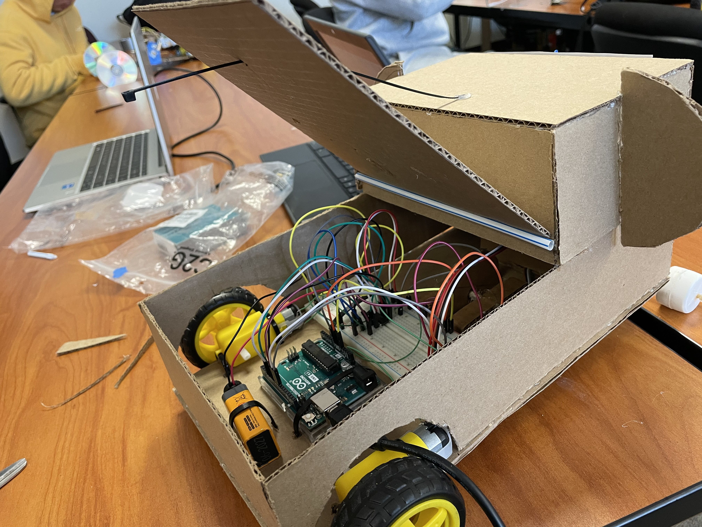 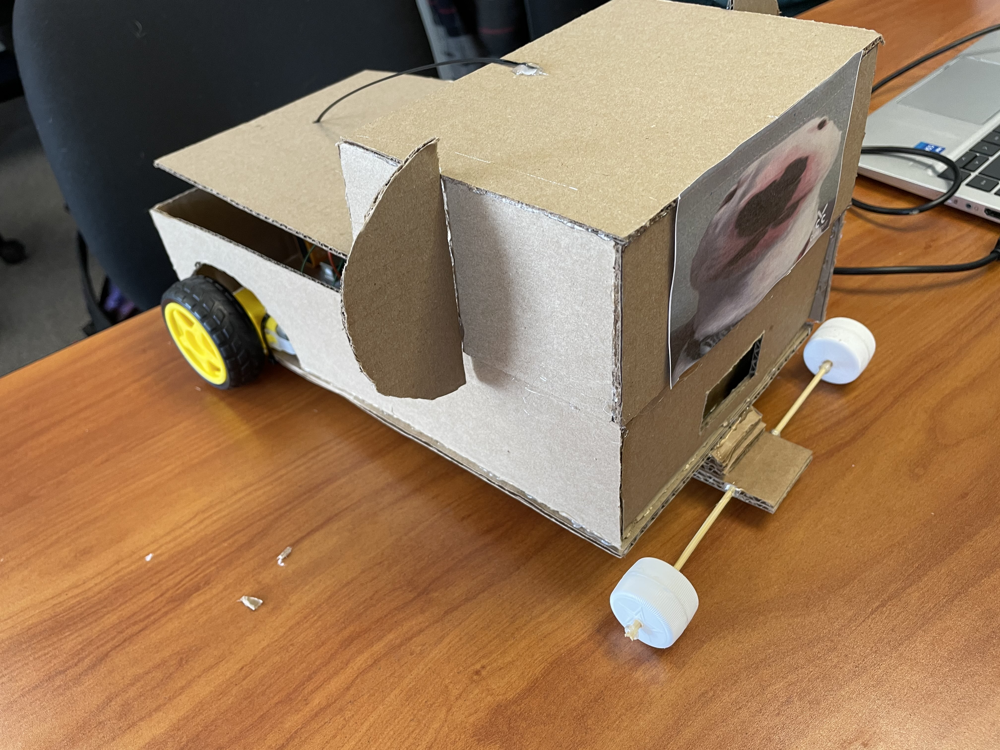3/10/2023
We did not do much this weekend, as the spring break was next week and starting something new would not be comfortable. Altough, we did have a challenge day. This time we built and tested gutter boats. Altough, it was not the best challenge we have had, it was pretty interesting to work on. My boat's performance was not flawless, but it did not do worse than I imagined.

3/24/2023
Over the spring break I mainly rested. I felt like this week without school was crucial, because the finals and the ap tests are getting close. I also visited a piano concert, it was very impressive. The first week back to school was light. We did not do much, but we started a new small project. We are supposed to make an apparatus that will protect a chicken egg from breaking after falling from a high distance. Below are is the design my group has come up with so far.

 Simulations Website
Simulations Document
Simulations Website
Simulations Document
4/7/2023
The egg drop was successful, our egg survived to be eaten later). We made a double parachute and a base with a cotton stuffing.
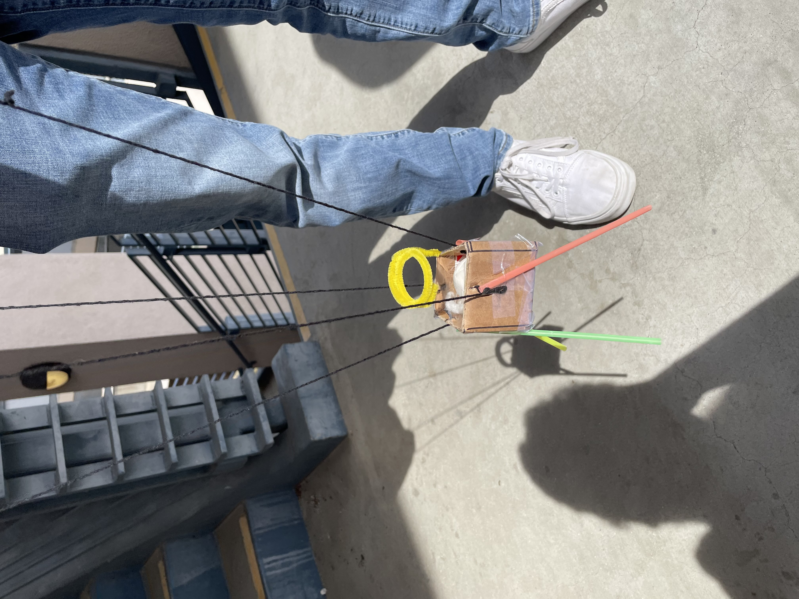We started the Final Project! We are going to build a life size boat using only cardboard and tape. Two of our 4 people group will be crossing the pool in it. The first week we spent on coordinating member jobs and brasinstorming a design. So far, we have a couple of design which we will be making a small replicas of to test next week.
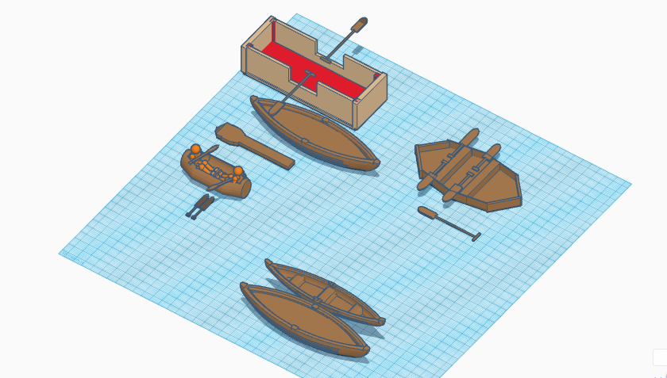4/14/2023
This week we worked hard on our project. The first couple of days we spent on research and documented it on a google doc (attached below). Then we started cadding and every member proposed a design. After consideration of our resources and goals we chose Joel's design and set off to making a model. The real boat is predicted to be 5 times the model size. The model is fairly simple and one interesting characteristic of it is its flooring. We rolled up cardboard and put it on the bottom and covered it with cardboard. Thus, we hope to achive a more firm and stable basis. Next week we are going to test it and make appropriate changes to the design.
Our Research Progression 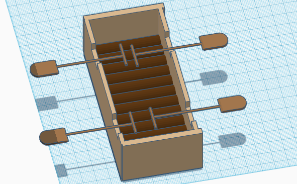
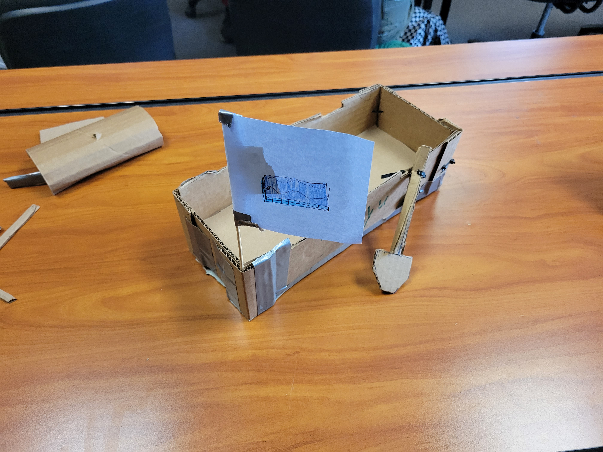
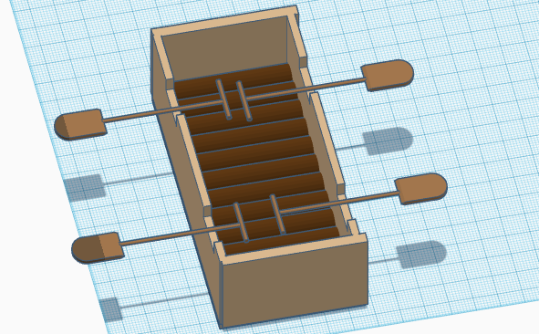
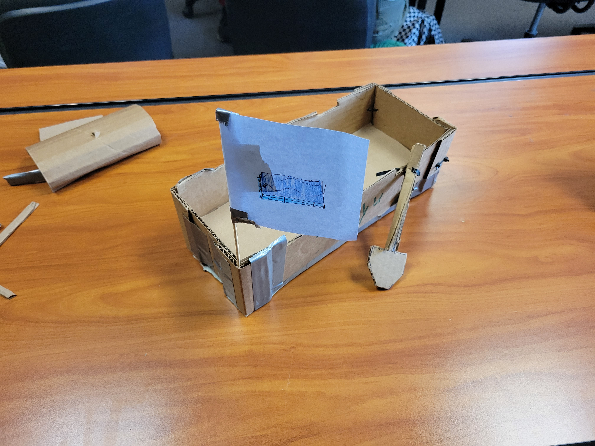